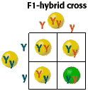

Monohybrid Cross Problem Set
Problem 5: Another F1 hybrid cross
Tutorial to help answer the question
A genetic cross between two F1-hybrid pea plants having yellow seeds will yield what percent green-seeded plants in the F2 generation? Yellow seeds are dominant to green.
Tutorial
| The F1-hybrid plants have the dominant, yellow seed phenotype, but the recessive alleles segregate during gamete formation. In the Punnett square, we see that one out of four possible combinations of F2-generation plants has the homozygous recessive genotype. |  |


The Biology Project
Department of Biochemistry and Molecular
Biophysics
University of Arizona
Thursday, October 1, 1998
Revised: November 2004
Contact the Development Team
http://www.biology.arizona.edu
All contents copyright © 1998-2004. All rights reserved.